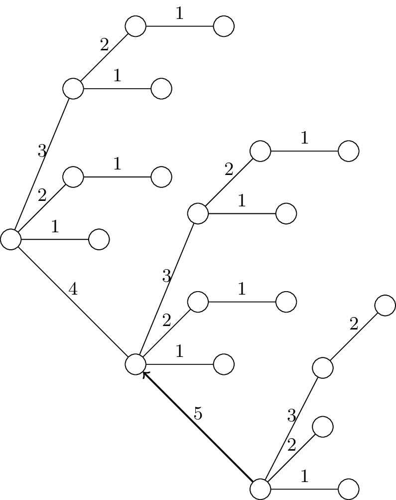

\documentclass[tikz]{standalone}
\tikzset{near start abs/.style={xshift=1cm}}
\usetikzlibrary{positioning}
\begin{document}
\begin{tikzpicture}[node distance=1.5cm]
% place nodes
\node[circle,draw=black, fill=white, inner sep=0pt,minimum size=10pt] (r) {};
\node[circle,draw=black, fill=white, inner sep=0pt,right of=r, minimum size=10pt] (r1a) {};
\node[circle,draw=black, fill=white, inner sep=0pt,above right of=r, minimum size=10pt] (r2a) {};
\node[circle,draw=black, fill=white, inner sep=0pt,right of=r2a, minimum size=10pt] (r2b) {};
\node[circle,draw=black, fill=white, inner sep=0pt,above of=r2a, minimum size=10pt] (r3a) {};
\node[circle,draw=black, fill=white, inner sep=0pt,right of=r3a, minimum size=10pt] (r3b) {};
\node[circle,draw=black, fill=white, inner sep=0pt,above right of=r3a, minimum size=10pt] (r4a) {};
\node[circle,draw=black, fill=white, inner sep=0pt,right of=r4a, minimum size=10pt] (r4b) {};
% Extension from 7 nodes
% Blank node
\node[inner sep=0pt,below right of=r, minimum size=10pt] (t) {};
\node[circle,draw=black, fill=white, inner sep=0pt,below right of=t, minimum size=10pt] (t1) {};
\node[circle,draw=black, fill=white, inner sep=0pt,right of=t1, minimum size=10pt] (t1a) {};
\node[circle,draw=black, fill=white, inner sep=0pt,above right of=t1, minimum size=10pt] (t2a) {};
\node[circle,draw=black, fill=white, inner sep=0pt,right of=t2a, minimum size=10pt] (t2b) {};
\node[circle,draw=black, fill=white, inner sep=0pt,above of=t2a, minimum size=10pt] (t3a) {};
\node[circle,draw=black, fill=white, inner sep=0pt,right of=t3a, minimum size=10pt] (t3b) {};
\node[circle,draw=black, fill=white, inner sep=0pt,above right of=t3a, minimum size=10pt] (t4a) {};
\node[circle,draw=black, fill=white, inner sep=0pt,right of=t4a, minimum size=10pt] (t4b) {};
% Third group
\node[inner sep=0pt,below right of=t1, minimum size=10pt] (v) {};
\node[circle,draw=black, fill=white, inner sep=0pt,below right of=v, minimum size=10pt] (v1) {};
\node[circle,draw=black, fill=white, inner sep=0pt,right of=v1, minimum size=10pt] (v1a) {};
\node[circle,draw=black, fill=white, inner sep=0pt,above right of=v1, minimum size=10pt] (v2a) {};
\node[circle,draw=black, fill=white, inner sep=0pt,above right of=v1,yshift=1cm, minimum size=10pt] (v3a) {};
\node[circle,draw=black, fill=white, inner sep=0pt,above right of=v3a, minimum size=10pt] (v4a) {};
\draw (r) -- node[above] {\small{1}} ++(r1a);
\draw (r) -- node[above] {\small{2}} ++(r2a);
\draw (r3a) -- node[above] {\small{3}} ++(r);
\draw (r2a) -- node[above] {\small{1}} ++(r2b);
\draw (r3a) -- node[above] {\small{1}} ++(r3b);
\draw (r3a) -- node[above] {\small{2}} ++(r4a);
\draw (r4a) -- node[above] {\small{1}} ++(r4b);
% Second nodes
\draw (t1) -- node[above] {\small{1}} ++(t1a);
\draw (t1) -- node[above] {\small{2}} ++(t2a);
\draw (t3a) -- node[above] {\small{3}} ++(t1);
\draw (t2a) -- node[above] {\small{1}} ++(t2b);
\draw (t3a) -- node[above] {\small{1}} ++(t3b);
\draw (t3a) -- node[above] {\small{2}} ++(t4a);
\draw (t4a) -- node[above] {\small{1}} ++(t4b);
% Third node
\draw (v1) -- node[above] {\small{1}} ++(v1a);
\draw (v1) -- node[above] {\small{2}} ++(v2a);
\draw (v3a) -- node[above] {\small{3}} ++(v1);
\draw (v4a) -- node[above] {\small{2}} ++(v3a);
\draw (r) -- node[above] {\small{4}} ++(t1);
\draw[->, thick] (v1) -- node[above] {\small{5}} ++(t1);
% \draw (t1) -- node[above] {\small{3}} ++(t2a);
% \draw (t1) -- node[above] {\small{2}} ++(t2b);
\end{tikzpicture}
\end{document}Created by David Li